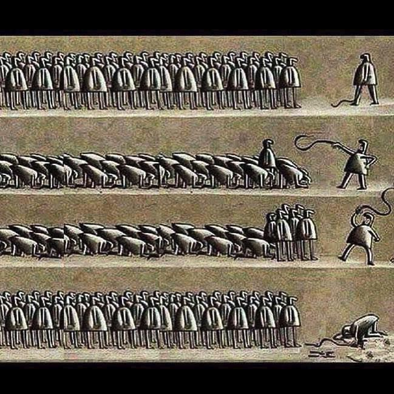

I turned libertarian after reading Ain't Nobody's Business If You Do, by Peter McWilliams. By "libertarian" I mean that I believe in the Zero Aggression Principle. Whoever throws the first punch is wrong. Always.
The Zero Aggression Principle: Who is a Libertarian? by L. Neil Smith
After many years of reading and thinking about libertarian ideas, it became evident that the Zero Aggression Principle implies anarchy, anarcho-capitalism to be precise. I suppose a state with no taxes and no criminalization of anything but intentional aggression could be libertarian, but I've never seen one.
About a year ago, I realized that we live in an anarchist world. It is that way by nature. Nothing has to be or CAN be done about it. We each have free will, and that cannot be taken away. It can only be GIVEN away or punished. And if enough of us stop respecting imposed authority, there will be no way to punish us. The only hope the authoritarians of the world have is to brainwash us into believing their authority is valid. It isn't.

This means that there is nothing to do, politically, except to train people that imposed authority is not valid, and wait for the dinosaur to collapse under its own weight. Yes, communities will need to AGREE on rules, but it must ALL be voluntary for everyone involved, or it doesn't satisfy zero aggression.
A treatise on the invalidity of imposed authority: The Most Dangerous Superstition, by Larken Rose.
A couple of essays I wrote about my political beliefs, before realizing that the world is anarchist by nature.